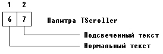
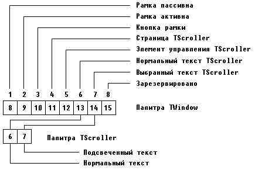

|
|
|
|
Цветовая палитра
В процедуре Draw переменная Color задает атрибуты (цвет символов и цвет фона) символов, выводимых с помощью методов MoveChar и MoveStr. С помощью функции GetColor она устанавливается таким образом, чтобы символы на экране отображались цветовым сочетанием с номером 1. В Turbo Vision используется гибкая система установки цвета отдельных видимых элементов. Элемент изображения связывается не с каким-то конкретным цветом, а с индексом в таблице цветов, называемой палитрой. Количество элементов палитры зависит от количества цветовых сочетаний, используемых при выводе элемента изображения. Например, в TScroller используется двухэлементная палитра цветов: первый элемент устанавливает цвет нормального текста, второй - выделенного текста (рис. 15.6).

Рис.15.6. Палитра объекта TScroller
Числа 6 и 7 в этой палитре указывают не конкретные цвета, а номера позиций в палитре объекта-владельца. Для нашего случая объектом-владельцем будет TWindow. Таким образом, цвет номер 1 палитры TScroller лишь указывает на шестое по счету цветовое сочетание в палитре TWindow (рис. 15.7).

Рис. 15.7. Связь палитр TScroller и TWindow
Шестой элемент палитры TWindow в свою очередь ссылается на 13-й элемент палитры своего владельца - TProgram. Объект TProgram - это начальный видимый элемент любой программы в Turbo Vision. На нем заканчивается любая цепочка ссылок, т.е. его палитра содержит конкретные атрибуты символов. Тринадцатый элемент этой палитры содержит значение $1Е, что соответствует выводу желтого символа на синем фоне - именно таким образом отображается нормальный текст в окне TScroller, если это окно вставлено в TWindow. Если бы объект TScroller был помещен непосредственно на панель экрана, то значение 6 в первом элементе палитры TScroller указывало бы на 6-й элемент палитры TProgram, содержащий атрибуты $28 (темно-серые символы на зеленом фоне). Цветовые палитры в Turbo Vision содержат такие значения по умолчанию, чтобы любая комбинация цветов давала приятную цветовую гамму. При необходимости пользователь может изменить любую цветовую палитру. Вернемся к нашему примеру и рассмотрим реализацию конструктора Init:
Constructor TInterior.Init(var Bounds: TRect;
HS,VS: PScrollBar);
{Создает окно для данных}
begin
Inherited Init(Bounds, HS, VS) ;
ReadFile;
GrowMode := gfGrowHiX + gfGrowHiY;
SetLimit(LLine,NLines)
end; {Tinterior.Init}
Объект TScroller имеет поле GrowMode, которое определяет, как элемент будет изменять свои размеры, если пользователь потребует этого. Параметр gfGrowHiX предписывает окну TScroller изменяться таким образом, чтобы правая его граница всегда находилась на постоянном расстоянии от правой границы владельца. Точно также gfGrowHiY задает неизменным расстояние нижней границы окна TScroller от нижней границы владельца. Таким образом, окно TScroller всегда будет занимать всю внутреннюю часть окна-владельца TWindow. С помощью процедуры SetLimit (X, Y) мы задаем горизонтальную Х и вертикальную У границы перемещения окна относительно текста. Эти границы будут выдерживаться при управлении окном с помощью клавишей или мыши: какими бы не были текущие размеры окна, нажатие на клавишу End, например, смещает его вправо так, чтобы самым правым видимым символом был Х-й символ текста. Нажатие на клавиши Ctrl-PgDn смещает окно вниз по тексту таким образом, чтобы самая нижняя строка окна соответствовала Y-й строке текста. Иными словами, параметры X и Y задают координаты правого нижнего угла виртуального (воображаемого) экрана неограниченных размеров, на котором находится текст и по которому «скользит» окно. Левый верхний угол виртуального экрана всегда имеет координаты (0,0).
Осталось отредактировать конструктор TWorkWinJnit: нужно изменить тип переменной Interior
var
.......
Interior: PInterior;
и обращение к конструктору:
Interior := New(PInterior, Init(Bounds, HS, VS));
Но не спешите запускать программу на счет: ведь файла данных пока еще нет, а поэтому Вы ничего не увидите на экране. Чтобы все-таки оценить достигнутые результаты, измените текст процедуры ReadFile - добавьте в него следующие строки:
Procedure TInterior.ReadFile;
{Читает содержимое файла данных}
var
.......
f: text;
begin
s := copy(ParamStr(0),l,pos('.',ParamStr(0)))+'pas';
assign(f,s);
reset(f); {Открываем файл с текстом программы}
NLines := 0;
while not EOF(f) and (NLines < MaxLine) do
begin
inc(NLines);
ReadLn(f/Lines[NLines])
end;
close (f) ;
exit;
.......
end; {ReadFile}
Добавленные строки заставят процедуру прочитать в массив Lines текст самой программы (если Вы будете запускать программу из среды Турбо Паскаль, не забудьте установить компиляцию в дисковый файл опцией COMPILE/DESTINATION, иначе оператор
s:=copy(ParamStr(0),l,pos('.',ParamStr(0)))+'pas';
не сможет установить в S правильное имя файла с текстом Вашей программы). После запуска программы нажмите клавишу F3, задайте имя несуществующего файла, нажмите клавиши Enter и F4 - на экране появится изображение, показанное на рис. 15.8.
Это окно откликается на нажатие клавиш управления курсором, команды PgUp, PgDn, Ctrl-PgUp и т.д. подобно тому, как ведет себя окно редактора в среде Турбо Паскаль. С помощью мыши Вы можете перемещать его по экрану, изменять размеры, закрывать - все эти действия реализует стандартный обработчик событий объекта TScroller.
|
|
|
|